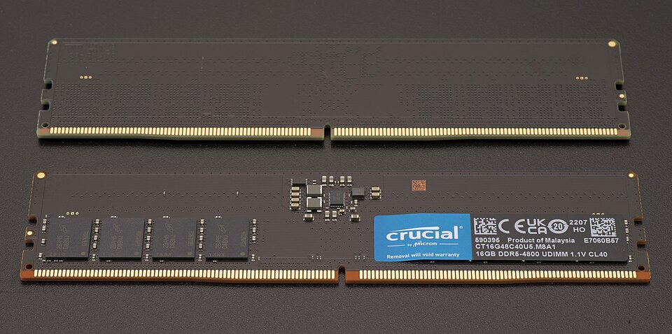

In Chapter 4 we introduced the memory hierarchy as a way to explain cache: the CPU needs data faster than RAM can deliver it, so we build small, fast pools of memory close to the processor. But we stopped at the L3 cache. That was only the top of the ladder.
The full hierarchy runs much deeper — from registers that live on the processor die itself, all the way down to magnetic tape libraries in climate-controlled vaults. Every tier in that hierarchy makes the same fundamental tradeoff: the faster it is, the smaller and more expensive it is. The slower it is, the cheaper and more capacious.
Understanding that tradeoff — and knowing which tier belongs in which situation — is a core competency for anyone who specifies, maintains, or troubleshoots IT systems.
Primary vs. Secondary Storage
Before we look at the full hierarchy, it helps to understand the most important conceptual split in the whole field: the difference between primary and secondary storage.
Primary storage is memory the CPU can address directly — meaning the processor can issue a single instruction that reads or writes any location in it. Registers, cache, and RAM are all primary storage. Access is measured in nanoseconds, and the CPU talks to it constantly. The catch: primary storage is volatile. Cut the power and the contents disappear.
Secondary storage is everything else — SSDs, hard drives, optical discs, magnetic tape. The CPU cannot read a file directly off a hard drive the way it reads from RAM. Instead, the operating system must first copy that data into RAM, and only then can the CPU operate on it. Secondary storage is non-volatile (data survives power-off) and orders of magnitude cheaper per gigabyte, but it requires that extra loading step before work can begin.
This distinction is one of the most useful mental models in IT troubleshooting. Almost every "why is this computer slow?" conversation traces back to a bottleneck somewhere on the path between secondary and primary storage — usually not enough RAM, or a slow drive that can't feed data into RAM fast enough. Knowing which tier is the chokepoint is half the battle.
The Full Hierarchy
Let's start by laying out the complete picture. You've seen the top half of this in Chapter 4. Here it is extended all the way down.
Notice two things about this table. First, the jump from RAM to NVMe SSD isn't a small step — it's roughly a 1,000× difference in latency. The jump from NVMe to HDD is another 100× after that. Second, cost per gigabyte drops dramatically as you move down: RAM costs hundreds of times more per gigabyte than an HDD. The whole field of storage architecture is essentially a long negotiation with this table.
To make those gaps concrete, here's an interactive look at the same data on a human timescale.
RAM: Fast but Forgetful
When people say "memory," they usually mean RAM — Random Access Memory. It's what holds the operating system, your running applications, and any data those applications are actively using. It sits between the CPU cache and long-term storage on the hierarchy, and it's the tier you interact with most directly when you upgrade or spec a machine.
What "Random Access" Actually Means
"Random" here doesn't mean disorganized or arbitrary. It means any memory location can be reached in the same amount of time, regardless of what was accessed before. Jump from address 0 to address 4,000,000,000 — same latency as jumping from address 0 to address 1. The access time doesn't depend on where you were last.
Contrast this with a hard drive, where the read head has to physically travel across the platter to reach the target sector — accessing two addresses far apart on disk takes longer than accessing two adjacent sectors. Magnetic tape is even more extreme: purely sequential, like a cassette you have to fast-forward. RAM has neither of these constraints. It's a flat, uniformly fast address space.
RAM achieves this through its physical grid structure. Every DRAM chip organizes its cells into rows and columns, and every byte has a unique numeric address starting at zero. The memory controller — built into modern CPUs — translates any address into a row/column coordinate and opens that exact cell directly, no seeking required.
Memory Addressing
You saw memory addresses in Chapter 4: the FDE widget showed the program counter stepping through addresses 0x00, 0x01, 0x02… and LOAD and STORE instructions specifying addresses like 0x10. Those addresses are real — they're the numeric labels the CPU uses to identify every byte in RAM.
From the CPU's perspective, RAM is just one long array of bytes, each with its own address. A machine with 16 GB of RAM has addresses 0 through 17,179,869,183 — about 17 billion individually addressable bytes. The CPU can read or write any of them in a single instruction.
How wide those addresses can be determines the maximum RAM a system can hold. A 32-bit processor has 32-bit addresses, giving a theoretical maximum of 232 bytes — exactly 4 GB. That's why 32-bit operating systems cap out at 4 GB of RAM, no matter how many sticks you install. A 64-bit processor has 64-bit addresses: 264 bytes, or about 18 exabytes of theoretical address space. Current hardware doesn't come close to that ceiling — we're limited by the physical number of address pins on the CPU and memory modules — but for practical purposes, 64-bit systems have no meaningful RAM limit for the foreseeable future.
0x in front of a number in a debugger, crash log, or system utility, you're looking at a memory address or offset.
The main working memory of a computer. Holds the operating system, running applications, and their active data. "Random access" means any byte can be retrieved in roughly the same time — unlike a tape, where earlier data takes longer to reach than nearby data. RAM is volatile: everything in it is lost when power is cut.
Nearly all RAM in modern computers is DRAM — Dynamic Random Access Memory. Understanding why the "dynamic" is there explains both why DRAM is fast and why it's volatile.
Each bit in DRAM is stored as a tiny electrical charge in a capacitor — essentially a microscopic bucket that holds electrons. A charged capacitor is a 1; a discharged one is a 0. Capacitors are small and cheap to manufacture at scale, which is why DRAM can pack billions of bits into a small module. But there's a catch: capacitors leak. Left alone, the charge slowly drains away, and the bit is lost. To prevent this, DRAM must be continuously refreshed — the memory controller reads every row and rewrites it thousands of times per second to replenish the charge. This is the "dynamic" in Dynamic RAM, and it's also why RAM is volatile: when power stops, so does the refresh cycle, and within milliseconds all the data is gone.
DDR: Generations of Speed
Modern DRAM is sold in the DDR standard — Double Data Rate. "Double data rate" means the chip transfers data on both the rising and falling edge of each clock cycle, effectively doubling throughput compared to sending data only once per cycle. Every few years, a new DDR generation raises the clock frequency, widens the data bus, or reduces operating voltage, delivering more bandwidth and better energy efficiency.
| Standard | Introduced | Typical Speed | Voltage | Common In |
|---|---|---|---|---|
| DDR3 | 2007 | 800–2133 MT/s | 1.5 V | Older desktops, budget systems |
| DDR4 | 2014 | 2133–3200 MT/s | 1.2 V | Most systems built 2016–2022 |
| DDR5 | 2020 | 4800–8400+ MT/s | 1.1 V | Current-generation desktops & laptops |
| LPDDR5 | 2019 | 6400+ MT/s | ~0.5 V | Smartphones, thin laptops, Apple Silicon |
The "MT/s" unit stands for megatransfers per second — the number of data transfers happening per second, accounting for the double-data-rate trick. You'll also see speeds listed as "DDR5-4800" or "PC5-38400": the first number is MT/s, the second is theoretical peak bandwidth in MB/s. For practical IT purposes, just know that higher is faster, newer generations are more power-efficient, and DDR generations are not compatible with each other — a DDR4 module will not physically fit in a DDR5 slot.
Physical Packaging: DIMM, SO-DIMM, and Soldered
RAM doesn't come as a bare chip you install yourself — it comes packaged on a small printed circuit board that you slot into the motherboard. There are three main form factors, and which one you have determines whether you can upgrade your memory at all.
A DIMM (Dual Inline Memory Module) is the full-size stick used in desktop computers and servers. It slots into a dedicated memory socket on the motherboard — typically two to eight slots — making it straightforward to add or replace. Most desktop systems accept DIMMs, so upgrading RAM is usually as simple as buying a compatible stick and pushing it in.
A SO-DIMM (Small Outline DIMM) is the laptop equivalent — physically half the length of a DIMM, using the same DDR standard but in a smaller package. Many laptops still use SO-DIMMs and include one or two slots, making them upgradeable. But check before you buy a laptop if upgradeability matters to you — this has become less common.
Soldered / LPDDR is the form factor that's increasingly common in thin laptops, smartphones, and Apple Silicon Macs: the memory chips are soldered directly to the motherboard, with no slot at all. LPDDR (Low Power DDR) variants run at lower voltages than standard DDR to extend battery life. The tradeoff is permanent: you get exactly as much RAM as the machine ships with, forever. There is no upgrade path. For IT procurement, this means choosing the right amount of RAM at purchase time is critical, because the decision is irreversible.

How Much RAM Do You Need?
This is one of the most common questions in IT procurement, and the honest answer is: it depends on the workload. But there are reasonable baselines.
| RAM | Appropriate For | Notes |
|---|---|---|
| 8 GB | Light office work, web browsing, email | Minimum for a comfortable Windows 11 or macOS experience |
| 16 GB | General business use, moderate multitasking | Sweet spot for most knowledge workers as of 2025 |
| 32 GB | Power users, developers, light video editing | Future-proofs a machine for 4–6 years; good default for IT specs |
| 64 GB+ | Workstations, virtualization hosts, data analysis | Running multiple VMs, large datasets, or pro media workflows |
When a system runs short of RAM, it doesn't crash — it slows down dramatically. We'll explain exactly why when we get to virtual memory later in this chapter.
SSDs: Flash Storage
Back in Chapter 2, we mentioned solid-state drives in a note box and said: they use floating-gate transistors that can trap charge even without power, and we'll cover them properly in Chapter 5. That time has come.
An SSD stores data using a type of transistor with an extra layer called a floating gate. Unlike a normal transistor, which loses its charge state when power is removed, a floating gate is completely surrounded by insulating material. Electrons can be forced onto the gate using a high voltage pulse (a write operation), and because they're trapped by the insulator, they stay there indefinitely — even without power. To erase a bit, a reverse voltage pulse sweeps the electrons back off. This is how NAND flash memory achieves the holy grail: non-volatile, fast, and solid-state (no moving parts).
The storage technology underlying all SSDs, USB drives, and memory cards. Stores bits as electrical charge trapped on floating-gate transistors. Non-volatile (data persists without power), fast, and durable compared to spinning disks. Named for the NAND logic gate pattern used in its cell array architecture.
Modern NAND flash is categorized by how many bits each cell stores:
| Type | Bits per Cell | Durability | Speed | Cost | Use Case |
|---|---|---|---|---|---|
| SLC | 1 | Highest (100K writes) | Fastest | Most expensive | Enterprise caches, industrial |
| MLC | 2 | High (10K writes) | Fast | High | High-performance consumer SSDs |
| TLC | 3 | Moderate (3K writes) | Good | Moderate | Most consumer SSDs today |
| QLC | 4 | Lower (1K writes) | Slower | Cheapest | High-capacity storage, read-heavy |
The durability figures above — "3K writes" for TLC — refer to program/erase cycles: how many times a cell can be written and erased before it starts to fail. This is why SSDs have a finite lifespan measured in total bytes written (TBW), which you'll see on every SSD specification sheet. A 1 TB consumer TLC drive typically carries a 300–600 TBW warranty. For most users, normal workloads will never exhaust this before the drive becomes obsolete — but for write-intensive workloads like database logging, it's worth speccing accordingly.
SSDs manage wear automatically through wear leveling: the controller spreads writes evenly across all cells so no single area gets burned out while others sit idle. You don't configure this — it happens transparently — but it's why you shouldn't worry too much about TBW for normal business use.
NVMe vs. SATA: The Interface Matters
An SSD can be fast internally but bottlenecked by how it connects to the rest of the system. There are two dominant interfaces, and the difference between them is significant.
| SATA SSD | NVMe SSD | |
|---|---|---|
| Interface | SATA III bus | PCIe (directly to CPU) |
| Form factor | 2.5" drive or M.2 | M.2 or PCIe add-in card |
| Max sequential read | ~550 MB/s | 3,500–14,000+ MB/s |
| Typical latency | ~500 μs | ~100 μs |
| Price premium | — | Small (10–20% more) |
| Best for | Upgrading older machines, budget builds | Any modern system purchased new |
The SATA interface was designed in the early 2000s for spinning hard drives. It works fine for SSDs, but the bus maxes out at around 550 MB/s — far below what modern NAND flash can deliver. NVMe (Non-Volatile Memory Express) is a protocol purpose-built for flash storage, connecting directly to the CPU via PCIe lanes, the same high-speed bus used by graphics cards. The result is 5–10× higher sequential throughput and meaningfully lower latency. For any system purchased today, NVMe is the default choice; SATA is mainly relevant when upgrading an older machine that lacks M.2 slots.
HDDs: Still Spinning
We covered the physics of hard drives in Chapter 2 — magnetic orientations on spinning platters, read/write heads floating nanometers above the surface. Here we'll focus on the specs that show up in purchasing decisions and the reasons HDDs are still manufactured and purchased in enormous quantities despite being decades-old technology.
Two specs drive HDD performance more than any other:
How fast the platters spin, measured in revolutions per minute. Consumer drives run at 5400 RPM or 7200 RPM. Enterprise drives can reach 10,000–15,000 RPM. Higher RPM reduces rotational latency — the time the drive waits for the right part of the platter to spin under the read head.
The time required for the read/write head to physically move to the correct track on the platter. Typically 5–12 ms for consumer drives. Seek time is a function of mechanical physics and cannot be reduced the way clock speeds can — it's why HDDs have a hard floor on latency that SSDs don't.
The sum of average seek time plus average rotational latency gives you the typical access time for a random read — usually 10–15 ms for a modern 7200 RPM drive. That 10 ms doesn't sound like much, but compare it to an NVMe SSD's 100 microseconds: the HDD is roughly 100× slower for random access. For sequential reads (scanning a large file from start to finish), HDDs are much more competitive, since the head stays in roughly the same location as data streams off the platter.
Given that gap, why does anyone still buy HDDs? Cost per gigabyte. A 2 TB NVMe SSD costs around $100–$150. A 2 TB HDD costs around $50, and 20 TB HDDs are available for under $400. For storing video archives, backups, bulk data that isn't accessed randomly, or any workload that prioritizes capacity over speed, HDDs remain the rational choice — and will for the foreseeable future.
Words vs. Blocks: How Storage Moves Data
In Chapter 4 you learned that CPUs operate on words — fixed-size chunks whose width matches the register size. A 64-bit processor reads and writes 8 bytes at a time; you can't load half a word into a register. Word size is a fundamental constraint baked into the CPU architecture.
Storage devices have an exact analogue: the block. A storage device doesn't read or write individual bytes — it works in fixed-size chunks. When the OS asks for one byte from a file on disk, the drive reads the entire block containing that byte and returns it all. When the OS writes one byte, the entire block must be rewritten. You cannot access half a block. On hard disk drives specifically, this hardware-level unit has its own name: a sector. "Block" is the general term used across all storage technologies (and by the filesystem layer above); "sector" refers to the physical addressable unit the HDD hardware itself exposes. The two are often the same size, but the distinction matters in documentation and low-level tools.
| CPU (Ch. 4) | Storage Device | |
|---|---|---|
| Natural unit | Word (4 or 8 bytes) | Sector / block (512 B or 4 KB) |
| Why that size? | Register width | Disk geometry / NAND page size |
| Minimum operation | One word | One block |
| Granularity set by | CPU architecture | Storage hardware |
| Software thinks in | Bytes (abstracted by compiler) | Files (abstracted by filesystem) |
The block size isn't arbitrary — it follows from the physics of each storage technology:
- HDDs. Seek time and rotational latency mean the overhead of reaching a location is paid whether you then read 1 byte or 512. Since the cost is the same, you might as well read a full sector. Traditional hard drives standardized on 512-byte sectors; modern drives use 4,096-byte sectors (called 4K or Advanced Format) for better error correction and larger capacity support.
- SSDs. NAND flash physically cannot address individual bytes. Internally, flash is organized into pages (~4 KB, the minimum read/write unit) and erase blocks (~256 KB, the minimum erase unit). Writing a single byte requires reading the surrounding page, modifying it in memory, erasing the erase block, and rewriting the whole thing — a phenomenon called write amplification that contributes to both write latency and cell wear.
Blocks are also why the filesystem concept from Chapter 9 is necessary in the first place. A filesystem's core job is to maintain a mapping from human-readable filenames to the specific block addresses on disk where a file's content lives. Without that bookkeeping layer, a storage device is just a flat, unnamed sequence of numbered blocks — fast to read and write, but with no way to find anything.
Virtual Memory
Here's a practical problem: programs often want more memory than a system physically has. A machine with 16 GB of RAM might be running an operating system, a browser with forty tabs, a video call, a database client, and a few background services simultaneously. Individually they're fine; together they might want 20 GB.
The solution operating systems have used since the 1960s is virtual memory: the OS creates the illusion of a larger address space than physically exists by treating a portion of the storage drive as an overflow area for RAM. When physical RAM fills up, the OS identifies pages of memory that haven't been used recently — cold pages — and writes them to a reserved area on the drive called a page file (Windows) or swap partition (Linux/macOS). That RAM is then freed up for something that needs it now. When a process needs a page that was swapped out, the OS fetches it back from disk, potentially swapping out something else in its place.
From the program's perspective, none of this is visible — it sees one large, contiguous block of memory and has no idea which parts are in RAM and which are on disk. The hardware and OS handle the translation transparently through a structure called the page table, which maps each virtual address to either a physical RAM location or a disk address.
The problem arises when demand for RAM consistently exceeds supply. If the system is constantly swapping pages in and out — because every access touches a page that was just swapped out to make room — the drive becomes a bottleneck. This state is called thrashing, and it's recognizable: the machine becomes nearly unresponsive, the drive activity light is on solid, and everything grinds. The fix is almost always more RAM.
Virtual memory with an SSD is dramatically less painful than with an HDD — an NVMe drive's latency is roughly 100× lower — but even NVMe paging is orders of magnitude slower than actual RAM. Virtual memory is a safety net, not a performance feature.
Speccing and Choosing Storage
Given everything above, how do you make practical decisions? Here's a framework.
The Three Questions
Every storage decision reduces to three questions: How fast does it need to be? (latency and throughput requirements) How much do you need? (capacity) How long does it need to last? (durability and persistence). The answers determine where on the hierarchy you shop.
| Workload | Recommended | Reasoning |
|---|---|---|
| Primary OS / apps drive | NVMe SSD | Boot time and application launch speed dominate user experience |
| Active project files | NVMe or SATA SSD | Frequent random reads/writes benefit from low SSD latency |
| Media archive / bulk storage | HDD | Sequential access, infrequent, cost/TB is dominant factor |
| Backup copies | HDD + cloud | Redundancy matters more than speed; 3-2-1 rule applies |
| Enterprise database | NVMe SSD (enterprise-grade) | Random IOPS and latency are critical; TBW endurance matters |
| Cold archival (years) | Tape or object storage | Lowest cost/GB; access time is not a concern |
The 3-2-1 Backup Rule
No storage device is permanent. SSDs fail. HDDs fail. Cloud services get discontinued. Ransomware encrypts everything it can reach. The industry standard for data protection is the 3-2-1 rule:
- 3 copies of the data (the original plus two backups)
- 2 different storage media types (e.g., local SSD + external HDD, or local + cloud)
- 1 copy stored offsite or off-network (so a fire, flood, or ransomware that hits your office can't destroy all copies)
For a business, "offsite" typically means cloud backup (AWS S3, Azure Blob, Backblaze B2) or a tape rotation scheme where tapes are stored off premises. For an individual, it can be as simple as an external drive kept at a different location plus cloud sync.
The rule is a minimum, not a ceiling. Critical data — medical records, financial data, legal documents — warrants more copies with more geographic separation. The question to ask is: if this building burned down tonight, what data would be gone forever? Whatever the answer is, that data is under-protected.
Storage Tiering in Enterprise
Large organizations rarely use a single tier of storage. Instead, they implement storage tiering: automatically moving data to the appropriate tier based on how frequently it's accessed. Hot data — currently active databases, recently accessed files — lives on fast NVMe storage. Warm data — files accessed occasionally — lives on SATA SSDs or high-RPM HDDs. Cold data — archives, old backups, compliance records — gets pushed to tape or object storage. Tiering software monitors access patterns and handles the movement automatically, optimizing cost without sacrificing performance for active workloads.